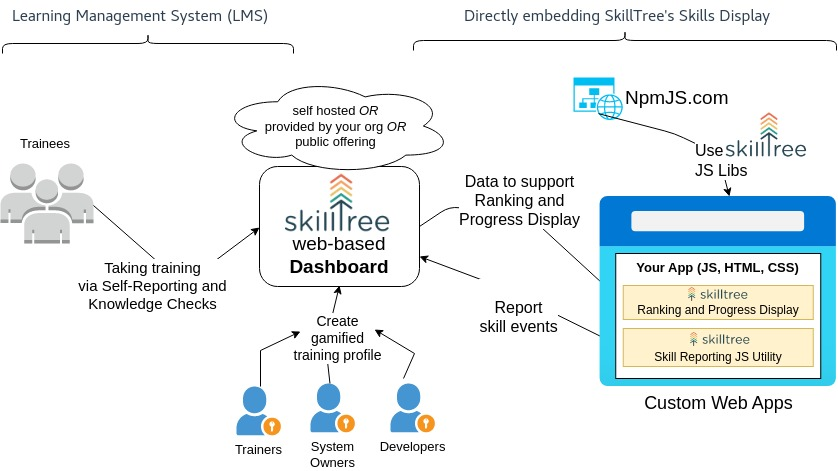

Présentée par Xinhe YU
le 30 mai 2025
| Membre | HTML/CSS /JS/Angular |
Test Front-end |
Java/Spring /MySQL |
Test Back-end |
Docker & CI/CD | Figma | Quality Analysis |
|---|---|---|---|---|---|---|---|
| Dimitry | Intermédiaire | Débutant | Débutant | Débutant | |||
| Rachida | Confirmé | Débutant | Confirmé | Débutant | |||
| Jorge | Expert |

Testing Java avec JUnit 5, Mockito et REST AssuredAngular Testing CourseL’essentiel de Selenium